Introduction
The Sketch Tool is a tool that allows you to quickly generate meshes
without going to 3rd party modeling applications, such as Maya or 3DS
Max. It is not meant to create final or game ready art, just rough
shapes that are placeholders for your real art. For example, you can use
this tool to sketch the shape of a building you want. The rough design
can fit your needs for a simple design and estimated measurements.
Setup
This article was written using a newly generated project with the
Full Template, which ships with plenty of free assets for testing and
learning. To save time and focus on this specific section of the
documentation, we are going to bypass asset creation until later on.
None of the modifications you are about to make are
required for future tutorials, so feel free to create a new level or
use an existing one for testing. As long as you have a flat surface to
work with, as a reference.
If you don't have a previous level you'd like to work with, you need to create a new one. To create a new level, choose File > New Level.
(click to enlarge)
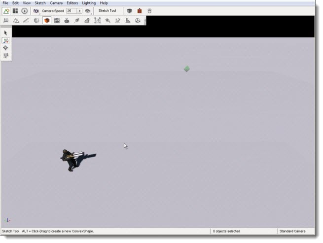
Interface
To switch to the Material Editor press the F4 key or from the main menu select Editors > Material Editor or click on the orange box icon to get started
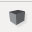. The Tools Palette will populate with basic manipulation icons:
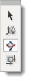
Tool Descriptions (top to bottom):
- Select Object - Select a convex object or individual face
- Translate - Move an individual face
- Rotate Object - Rotate an individual face
- Scale Object - Grow or shrink an individual face
As with the other editors, extremely helpful usage hints will be
displayed in the bottom left corner of the editor. Shortcuts and basic
descriptions will appear based on which tool you are using:
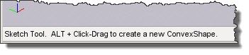
Creating a Convex Shape
The very basic interface allows you to quickly sketch out convex
shapes. All of your editing can be performed via mouse actions. To
begin creating a convex shape, hold down the Alt key and left mouse
button to begin drawing a base. The base will follow where your mouse
cursor is being dragged, shrinking or growing as it goes.
(click to enlarge)
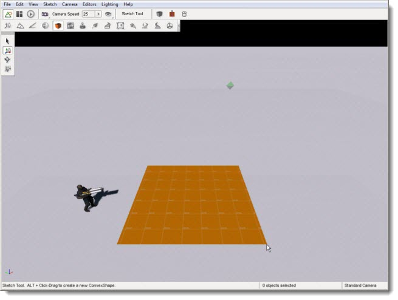
Once you let go of your mouse button, the base will stop
growing. From here you can move your mouse cursor up and down to change
the height of your new box. You do not have to hold down the mouse
button during this time.
(click to enlarge)
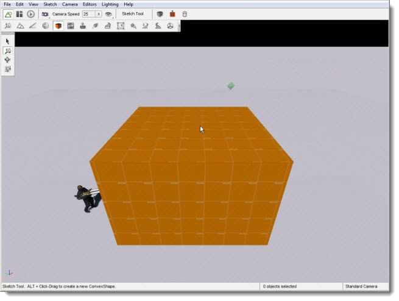
Once you are happy with your convex shape's height, left
click one last time. The box will become a solid object and
automatically be selected. If you make a mistake, hit Ctrl-Z to undo and erase the shape then repeat the process.
When you are ready to begin shaping the box,
left click one of its faces. The currently selected face will be
highlighted in bright pink:
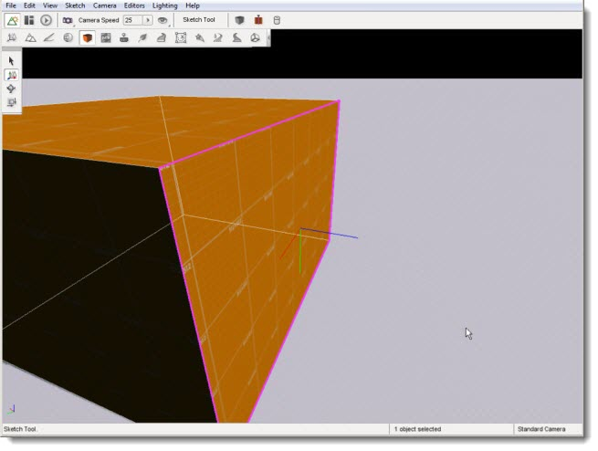
(click to enlarge)
At this point, you can start using the Sketch tools to edit the specific face you have selected.
Editing a Convex Shape
Let's move some surfaces around. Start by selecting a faceof the object by (left clicking on it).
Three colored lines will now extend from the center of that face - these represent the axes for the
three dimensions x, y and z. This is called the axis gizmo. Activate the Move Selection tool by clicking the icon
 on the Tools Palette on the left of the screen (or press the shortcut key, which is the number 2):
on the Tools Palette on the left of the screen (or press the shortcut key, which is the number 2):
(click to enlarge)
Once the Move Selection tool is activated, arrows will appear on the ends of the axis gizmo. Click on the X-axis
and drag it outward. Your face will move in the direction you are
dragging your mouse. The entire convex shape will adjust according to
where the face as moved. You will be able to move the face in any
direction in three-space:
(click to enlarge)
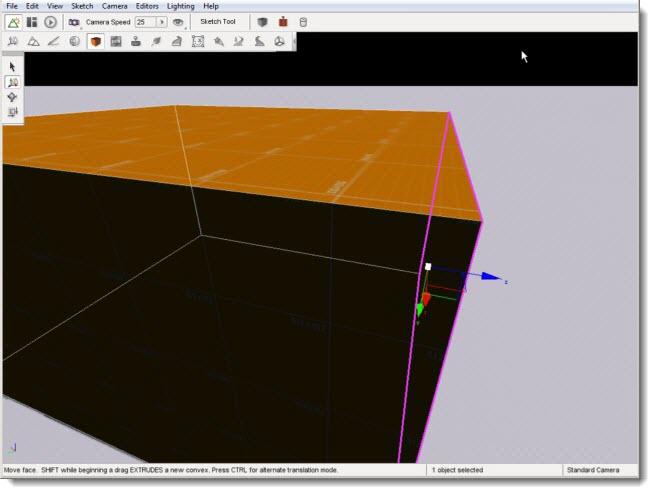
Next, activate the Rotate Selection tool by clicking the icon
on the Tools Palette on the left of the screen (or press the shortcut
key, which is the number 3). A spherical gizmo will appear representing the orientation manipulators.
The axis gizmo straight lines will now be displayed as three curved colored lines:
(click to enlarge)
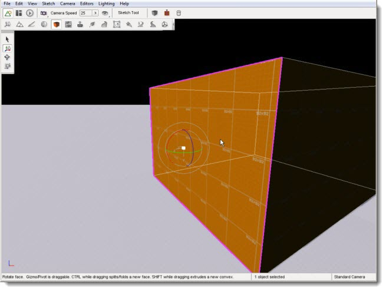
Click and hold one of the colored lines (an axis), and drag it in a direction. The selected face will begin to slope according to the new orientation:
(click to enlarge)
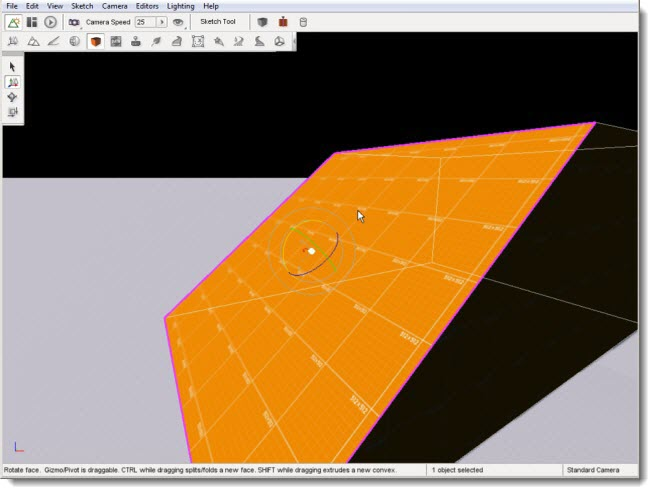
Finally, activate the Scale Selection tool by clicking the icon
on the Tools Palette on the left of the screen (or pressing the shortcut key, which is 3the number 4). Click on the
top face of the box. A squared like gizmo will appear which will allow you
to choose what parameters to adjust. You can adjust the (width, height, depth, or any
combination of the three):
(click to enlarge)
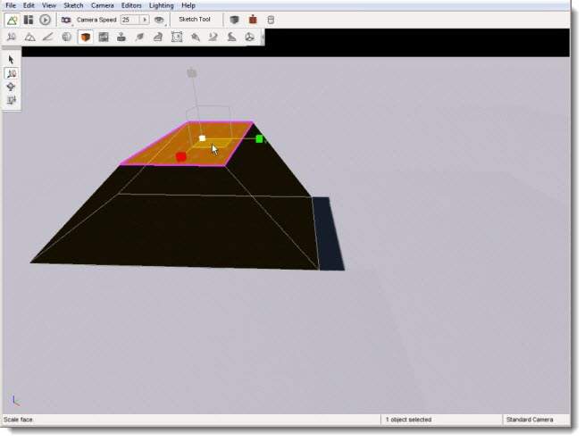
Instead of adjusting one parameter at a time, we are going
to adjust width and height. Move your mouse over the different squares to see how they highlight. Click the bottom square of
the gizmo, in between the red X and yellow Y axis and hold down the mouse button. Drag your mouse in either direction
to shrink or grow the face. The more you shrink, the more like a
pyramid it will be come:
(click to enlarge)
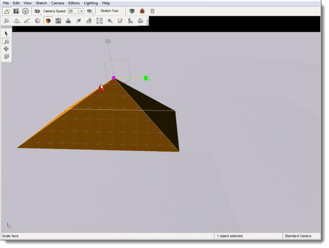
The last action this guide will address is extruding.
The Sketch Tool extruding feature creates new geometry from a selected a
face. Start by creating a new convex shape - review the section,
Creating a Convex Shape,
if you don't remember how.
(click to enlarge)
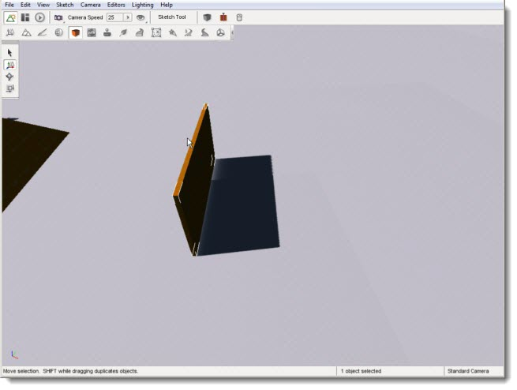
Next click on a single face of the shape. Make sure you have a face selected, and not the entire object.
The selected face should be highlighted with a in bright pink. Activate the Move Selection
tool. A hint will display at the bottom of the editor: "Move
selection. SHIFT while beginning a drag EXTRUDES a new convex."
(click to enlarge)
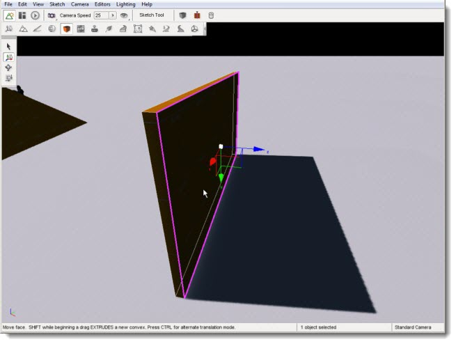
Perform this action as described. With the face selected,
hold down the SHIFT key, move the mouse over one of the colored arrows, and click and drag outwards from the object. The
exact dimensions of the original face will be duplicated, constructing
a new convex based on those parameters. This may not be apparent until you click on a face and see that the area of the new face is separate from the original:
(click to enlarge)
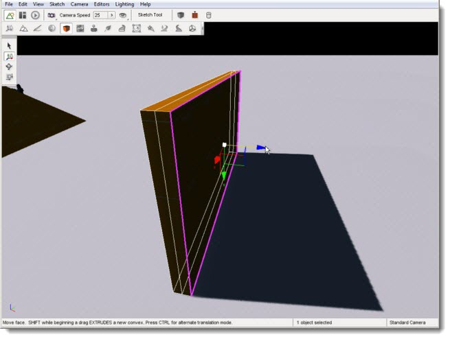
You can now select faces on the new convex object and continue editing it as a new object:
(click to enlarge)
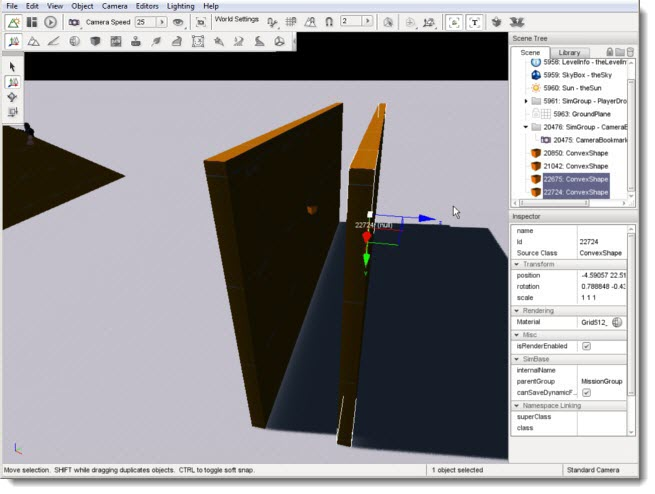
Object Manipulation
When you are finished sculpting a convex shape, you can manipulate it as you would with any other
game object using the Object Editor. This includes selection, translation/rotation/scaling, and
editing specific properties.
Unlike the Sketch Tool, selecting a convex
shape using the Object Editor it treats the object as a whole. There is no
individual face selection. Switch to the Object Editor by pressing the F1 key then click on one of your objects:
(click to enlarge)
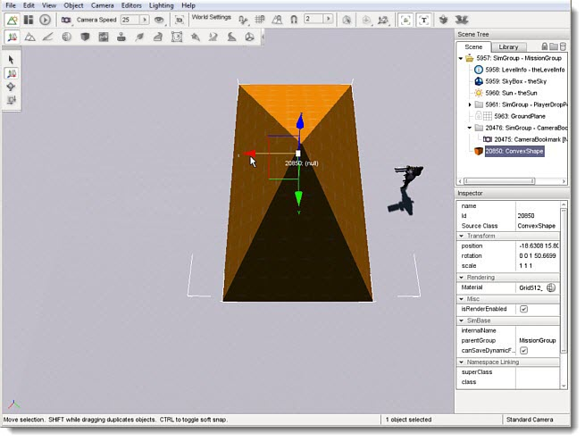
You may then manipulate the object using the normal Move Selection, Rotate Selection,
and Scale Selection tools of the Object Editor. You can even use the other more complex
Object Editor commands such as copying an object. To copy the
object: hold the SHIFT key; activate the Move Selection tool
by pressing (the 2 hotkey); press and hold the SHIFT key; then drag the mouse to a
new position in any direction. When you release
the mouse button you will have a new duplicate copy of the original object:
(click to enlarge)
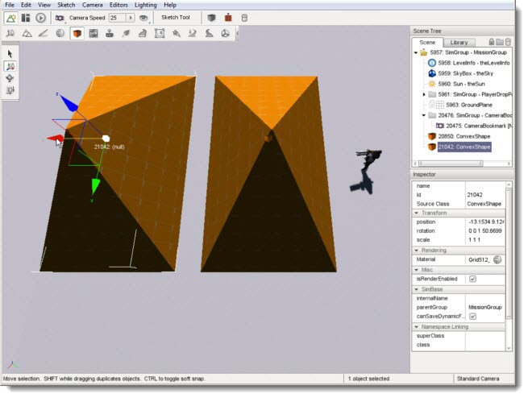
This can also be used for mass production of objects by copying multiple objects at once.
Change back to the Select Arrow tool by pressing the (1 hotkey).
Click one of your objects to select it. Take note of the position of the gizmo that appears
and the little cube at the gizmo’s origin. Now select the other object. Again take note of
the position of the gizmo and the cube for this object. Now press and hold down the SHIFT
key then click your other object again. You will notice there are now two small cubes,
one over each object, and one gizmo relatively near the center of the two objects. This
indicates that both objects are currently selected. You now have a selection group.
Change to the Move Tool by pressing the (2 hotkey). The cubes will disappear, and large
arrows will appear on the ends of the gizmo. If you mouse over either object, you will
see a faint transparent cube pop up. This indicates that object is a part of the selection
group. Clicking any arrow and dragging the mouse will not move all the objects at once.
Likewise, pressing and holding down the
SHIFT key, then clicking and drag will duplicate all the objects in the
selection group:
(click to enlarge)
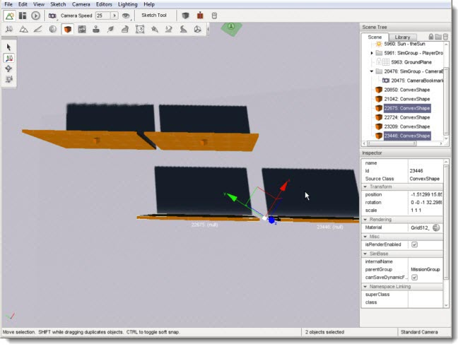
The new copy of the objects will now be the current selection and they
can be moved as a group or immediately copied again with another SHIFT-drag
operation. The above method combined with rearranging the individual objects
after copying them is a great way to piece together multiple convex shapes
to create more complex arrangements. For example, you might have unique convex
objects for a roof, wall, chimney, and so on. You could only create
one wall, then duplicate it four
times so that they are all the same size then arrange them into a building
with the Move Selection tool:
(click to enlarge)
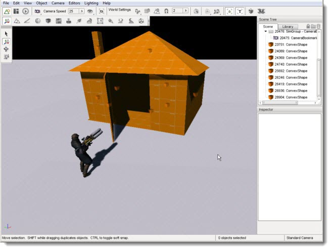
Once you get the hang of the Sketch Tool, you can sculpt unique
and complex shapes. Entire levels can be prototyped to use placeholder
art, created right inside Torque 3D, while you or your artists work on the final
assets using the tools that they are familiar with:
(click to enlarge)
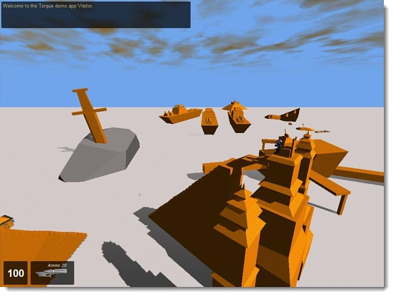
Conclusion
Unless your game is specifically designed to make use of rough,
convex shapes, your main interaction with the Sketch Tool will be
limited to rapidly prototyping meshes within Torque 3D. It is
absolutely possible to create more advanced structures with time, but this
goes outside of the tool's focus.
Take time to experiment with the Sketch Tool. Find an image
of a structure you wish to recreate, such as a house or bunker. Try
sculpting the object in Torque 3D to see how close you can get to the
original image. From there you can then import that into a modeling
application such as Maya or 3DS Max. You
may find this flow is actually very useful for content creation.
|
{kind=link}
{kind=link}
{kind=link}
{kind=link}
{kind=link}
{kind=link}
{kind=link}
{kind=link}
{kind=link}
{kind=link}
{kind=link}
{kind=link}
{kind=link}
{kind=link}
{kind=link}
{kind=link}
{kind=link}
{kind=link}